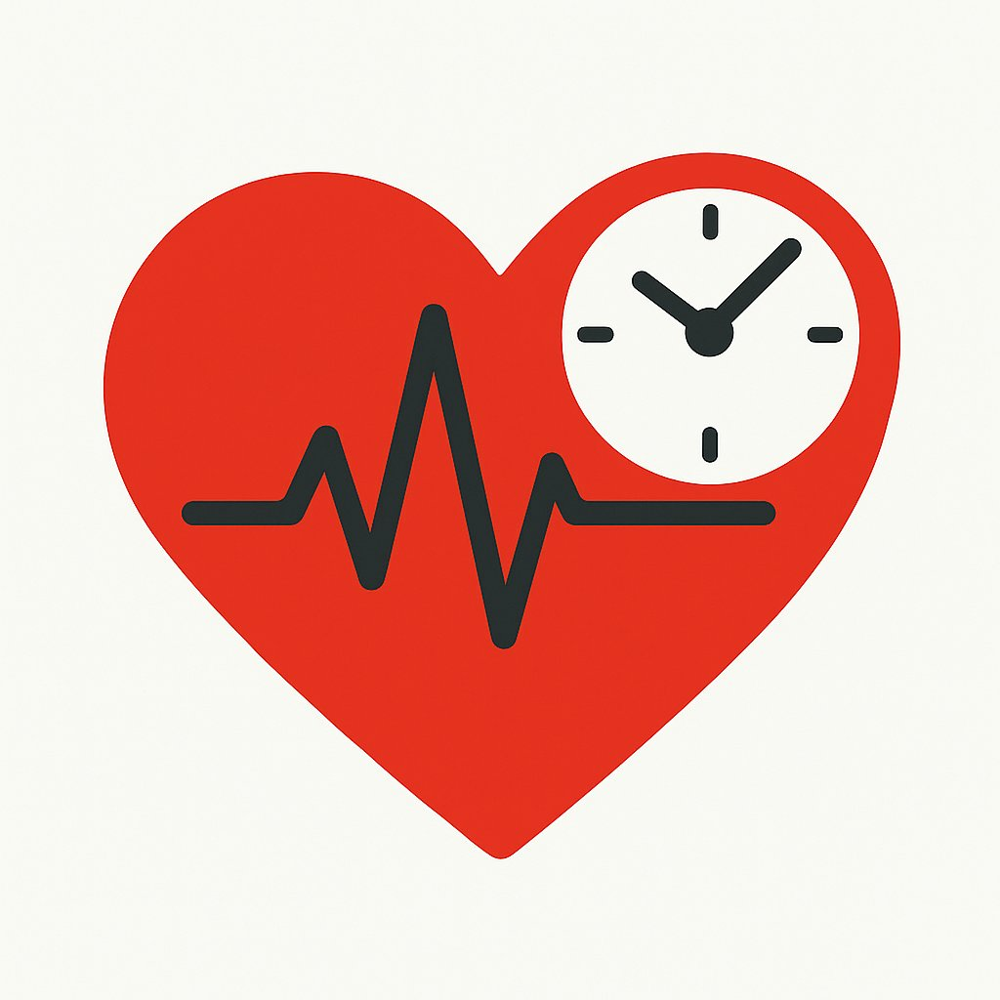

TimeSaver CPR
119구급대 현장 CPR 기록 및 시간관리 앱
📥 앱 다운로드 (v1.1 최신 APK)
📌 업데이트 내역
v1.1 (2025-08-30)
- 🚑 소속 선택 화면 추가
- 💉 에피네프린 버튼 기능 수정 (경과시간 표시)
- ⚡ 초기리듬 선택 화면 추가
- 🛠 기타 버그 수정 및 안정성 개선
📄
TimeSaver CPR 기능 설명서 (PDF)
* 중요 고지:
본 앱은 의료기기가 아니며, 의학적 진단, 치료, 처방을 위한 용도로 사용될 수 없습니다.